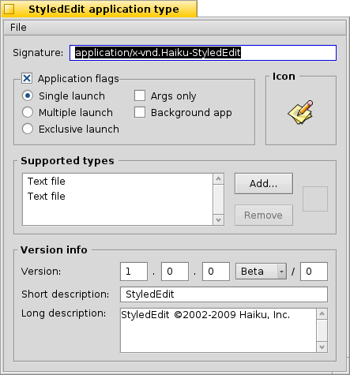

Typy plików
Inaczej niż w systemie Windows, Haiku nie polega na 3-literowych rozszerzeniach nazw plików (np. .txt, .jpg, .mp3) do rozpoznawania ich typu. Ta metoda jest ostatnią deską ratunku. Haiku używa typów MIME, tak jak robi się to w Internecie.
 Ustawianie typu konkretnego pliku
Ustawianie typu konkretnego pliku
Możesz zmienić typ pliku, jego ikonę i przypisaną aplikację. Wybierz plik i wywołaj dodatek FileType z menu kontekstowego.

Typ pliku
Powyżej widoczny jest plik PNG, jego typ MIME to image/png. Załóżmy że z całą pewnością nie jest to plik PNG, a GIF. Można to zmienić wprowadzając poprawny typ MIME ręcznie albo jednym z przycisków poniżej pola tekstowego:
| wyświetla hierarchiczną listę typów plików, gdzie należy znaleźć image | GIF Image. | ||
| otwiera panel wyboru pliku, gdzie należy wybrać plik, który jest poszukiwanego typu. |
Preferowana aplikacja
To rozwijane menu zawiera listę wszystkich aplikacji potrafiących obsłużyć ten typ pliku. Stąd możesz wybrać, która z nich ma otwierać ten konkretny plik po dwukrotnym kliknięciu, np. zmienić aplikację dla pliku HTML z przeglądarki internetowej na edytor w trakcie pracy nad tym plikiem. Wszystkie pozostałe pliki HTML nadal będą otwierane w przeglądarce, poza tym jednym.
to ta ustawiona globalnie dla tego typu pliku. Jeżeli nie znajdziesz oczekiwanej aplikacji w powyższym menu, dostępne są te same przyciski co opisane w sekcji wyżej.
Ikona
Jeżeli zastanawiasz się czemu ikona po prawej na górze jest pusta: ikony zazwyczaj dziedziczone są z domyślnego ustawienia systemu dla konkretnego typu. Aby zmienić ikonę, możesz upuścić ikonę przeciągniętą z dodatku Filetype wywołanego dla innego pliku. Możesz też dwukrotnie kliknąć ten obszar okna, co umożliwi stworzenie lub edycję ikony. Więcej informacji o procesie tworzenia ikon w temacie Icon-O-Matic.
Specjalne ustawienia dla aplikacji
Jeżeli wywołasz dodatek FileType na pliku wykonywalnym (tutaj: StyledEdit), zobaczysz inne okno:
U góry, zamiast standardowego typu MIME, znajduje się unikalna sygnatura aplikacji. Dzięki niej system zawsze jest w stanie odnaleźć aplikację, bez względu na to gdzie została zainstalowana.
Poniżej jest kilka flag kontrolujących zachowanie aplikacji:
| Tylko jedna instancja aplikacji może działać dla każdej kopii pliku wykonywalnego. | ||
| Wiele instancji aplikacji może działać jednocześnie. | ||
| Tylko jedna instancja aplikacji może działać w systemie. | ||
| Aplikacja nie odpowiada na wiadomości. | ||
| Aplikacja nie pojawi się w Twitcherze ani na liście w Deskbarze. |
Następnie, lista obsługiwanych typów plików. Możesz dodać (lub usunąć) typy, jeżeli uważasz że aplikacja sobie z nimi (nie) poradzi. Na podstawie tej listy tworzone jest menu preferowanych aplikacji oraz menu kontekstowe po kliknięciu pliku prawym przyciskiem myszy w Trakerze.
Na samym dole są informacje o wersji i prawach autorskich. Tak jak sygnatura, są uzupełniane przez twórcę aplikacji i nie powinny być zmieniane.
Globalne ustawienia w panelu preferencji FileTypes
Ten panel preferencji nie dotyczy pojedynczych plików, tylko ustawień dla całego systemu. Możesz zmienić domyślne ikony i preferowane aplikacje, oraz dodawać, usuwać i zmieniać atrybuty nawet typów nadrzędnych (takich jak text, image, itd.). Można również stworzyć własny typ od zera.
Wszystkie typy i ich ustawienia są przechowywane w /boot/home/config/settings/beos_mime/. Zanim zaczniesz eksperymentowanie, rozsądnie byłoby zrobić kopię zapasową tego katalogu.
Więcej informacji o typach plików i ich preferencjach zawarte jest w warsztacie: Typy plików, atrybuty, indeks i zapytania.